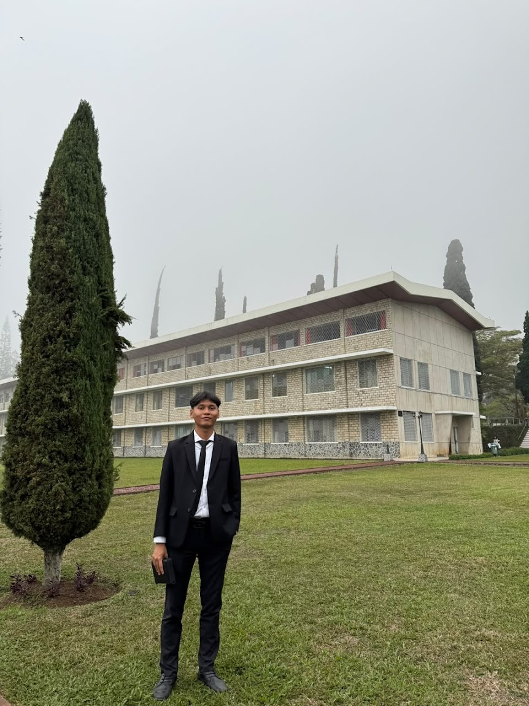

Name : Stanley Arsenova
Birthday : August 22 , 2004
Address : Jakarta
Status : Having a Nurse GF
My Experince at UNAI is very outstanding because what?.
it's because my lifestyle last year was completely diffrent,
as a philosophy student its very an honuor to learning more advanced about bible and also the history
but it's stil very a life changing
where i use to be called as a HardWorker
and very active in church service in the morning person,
but at night is totaly different person
Tak Perlu Kata - Kata,
Yang Penting Bukti Nyata
| No. | Bible Verse | Verse | Why I Like It |
|---|---|---|---|
| 1 | Romans 8:31 | "If God is for us, who can be against us?" | It reminds me that God is always on my side. |
| 2 | Psalm 23:1 | "The Lord is my shepherd; I shall not want." | It reminds me that God always provides and takes care of me. |
| 3 | Isaiah 41:10 | "Fear not, for I am with you." | It gives me strength whenever I face difficulties. |
Tuhan memelihara (Mazmur 23:1–2)
"TUHAN adalah gembalaku, takkan kekurangan aku."
Daud menggambarkan Tuhan seperti seorang gembala yang selalu memperhatikan domba-dombanya.
Seorang gembala tidak akan membiarkan dombanya kelaparan atau kehausan.
Begitu juga Tuhan dalam kehidupan kita. Terkadang kita merasa kekurangan,
khawatir tentang masa depan, atau takut menghadapi kehidupan.
Namun, kita harus percaya bahwa Tuhan mengetahui apa yang kita butuhkan.
Pelajaran: Jangan hanya melihat apa yang belum kita miliki,
tetapi belajarlah bersyukur atas pemeliharaan Tuhan setiap hari.
In This Economy, Please Jangan Boros